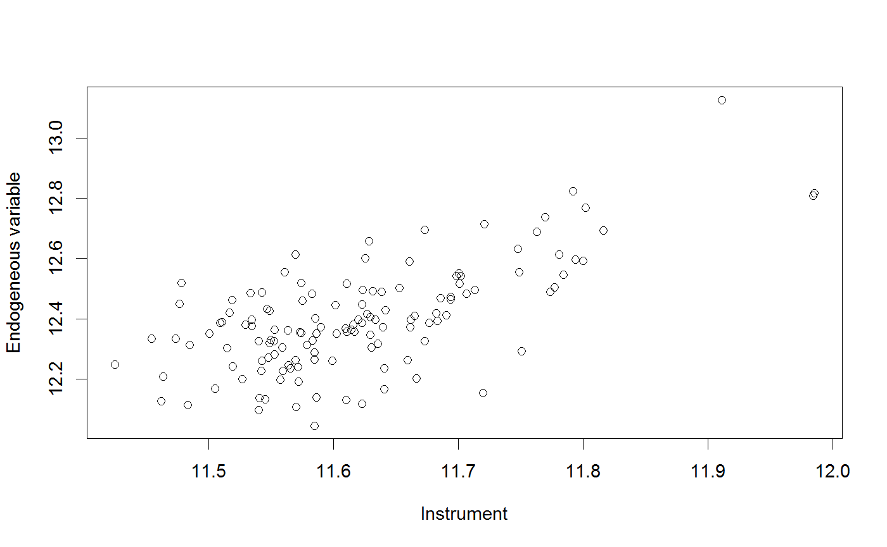

<!-- Generated by pkgdown: do not edit by hand -->
<!DOCTYPE html>
<html>
  <head>
  <meta charset="utf-8">
<meta http-equiv="X-UA-Compatible" content="IE=edge">
<meta name="viewport" content="width=device-width, initial-scale=1.0">

<title>Calculates an instrument for an endogenous variable in a sorting model setting — sorting_inst • sortingmod</title>

<!-- jquery -->
<script src="https://code.jquery.com/jquery-3.1.0.min.js" integrity="sha384-nrOSfDHtoPMzJHjVTdCopGqIqeYETSXhZDFyniQ8ZHcVy08QesyHcnOUpMpqnmWq" crossorigin="anonymous"></script>
<!-- Bootstrap -->

<link href="https://maxcdn.bootstrapcdn.com/bootstrap/3.3.7/css/bootstrap.min.css" rel="stylesheet" integrity="sha384-BVYiiSIFeK1dGmJRAkycuHAHRg32OmUcww7on3RYdg4Va+PmSTsz/K68vbdEjh4u" crossorigin="anonymous">
<script src="https://maxcdn.bootstrapcdn.com/bootstrap/3.3.7/js/bootstrap.min.js" integrity="sha384-Tc5IQib027qvyjSMfHjOMaLkfuWVxZxUPnCJA7l2mCWNIpG9mGCD8wGNIcPD7Txa" crossorigin="anonymous"></script>

<!-- Font Awesome icons -->
<link href="https://maxcdn.bootstrapcdn.com/font-awesome/4.6.3/css/font-awesome.min.css" rel="stylesheet" integrity="sha384-T8Gy5hrqNKT+hzMclPo118YTQO6cYprQmhrYwIiQ/3axmI1hQomh7Ud2hPOy8SP1" crossorigin="anonymous">


<!-- pkgdown -->
<link href="../pkgdown.css" rel="stylesheet">
<script src="../jquery.sticky-kit.min.js"></script>
<script src="../pkgdown.js"></script>
  
  
<!-- mathjax -->
<script src='https://mathjax.rstudio.com/latest/MathJax.js?config=TeX-AMS-MML_HTMLorMML'></script>

<!--[if lt IE 9]>
<script src="https://oss.maxcdn.com/html5shiv/3.7.3/html5shiv.min.js"></script>
<script src="https://oss.maxcdn.com/respond/1.4.2/respond.min.js"></script>
<![endif]-->


  </head>

  <body>
    <div class="container template-reference-topic">
      <header>
      <div class="navbar navbar-default navbar-fixed-top" role="navigation">
  <div class="container">
    <div class="navbar-header">
      <button type="button" class="navbar-toggle collapsed" data-toggle="collapse" data-target="#navbar">
        <span class="icon-bar"></span>
        <span class="icon-bar"></span>
        <span class="icon-bar"></span>
      </button>
      <a class="navbar-brand" href="../index.html">sortingmod</a>
    </div>
    <div id="navbar" class="navbar-collapse collapse">
      <ul class="nav navbar-nav">
        <li>
  <a href="..//index.html">
    <span class="fa fa-home fa-lg"></span>
     
  </a>
</li>
<li>
  <a href="../reference/index.html">Reference</a>
</li>
<li class="dropdown">
  <a href="#" class="dropdown-toggle" data-toggle="dropdown" role="button" aria-expanded="false">
    Articles
     
    <span class="caret"></span>
  </a>
  <ul class="dropdown-menu" role="menu">
    <li>
      <a href="../articles/my-vignette.html">sortingmod</a>
    </li>
  </ul>
</li>
      </ul>
      
      <ul class="nav navbar-nav navbar-right">
        
      </ul>
    </div><!--/.nav-collapse -->
  </div><!--/.container -->
</div><!--/.navbar -->

      
      </header>

      <div class="row">
  <div class="col-md-9 contents">
    <div class="page-header">
    <h1>Calculates an instrument for an endogenous variable in a sorting model setting</h1>
    </div>

    
    <p>Calculates an instrument for an endogenous variable in a sorting model setting</p>
    

    <pre class="usage"><span class='fu'>sorting_inst</span>(<span class='no'>s1.results</span>, <span class='no'>endog</span>, <span class='no'>data</span>, <span class='kw'>n.iterations</span> <span class='kw'>=</span> <span class='fl'>3</span>, <span class='kw'>stepsize</span> <span class='kw'>=</span> <span class='fl'>0.05</span>)</pre>
    
    <h2 class="hasAnchor" id="arguments"><a class="anchor" href="#arguments"></a> Arguments</h2>
    <table class="ref-arguments">
    <colgroup><col class="name" /><col class="desc" /></colgroup>
    <tr>
      <th>s1.results</th>
      <td><p>Indicates the (maxLik) object estimation results of the first stage of the sorting model</p></td>
    </tr>
    <tr>
      <th>endog</th>
      <td><p>Indicates the endogenous variable to be instrumented</p></td>
    </tr>
    <tr>
      <th>data</th>
      <td><p>Dataset to be used</p></td>
    </tr>
    <tr>
      <th>n.iterations</th>
      <td><p>Indicates the number of iterations</p></td>
    </tr>
    <tr>
      <th>stepsize</th>
      <td><p>Indicates the contraction-mapping scaling coefficient</p></td>
    </tr>
    </table>
    
    <h2 class="hasAnchor" id="value"><a class="anchor" href="#value"></a>Value</h2>

    <p>A list containing (1) Results of the IV estimation, with the computed vector as instrument for the endogenous variable. (2) a vector of the computed instrument, (3) the correlation between
the computed instrument and the original variable, and (4) the vector of the endogenous variable</p>
    
    <h2 class="hasAnchor" id="details"><a class="anchor" href="#details"></a>Details</h2>

    <p>Instrument is calculated using a logit model estimation, assuming market clearing conditions
given no unobserved heterogeneity between alternative choices (following Bayer et al. (2004))</p>
    

    <h2 class="hasAnchor" id="examples"><a class="anchor" href="#examples"></a>Examples</h2>
    <pre class="examples"><div class='input'><span class='no'>data</span> <span class='kw'>&lt;-</span> <span class='no'>municipality</span>
<span class='no'>s1.results</span> <span class='kw'>&lt;-</span> <span class='fu'><a href='first_stage.html'>first_stage</a></span>(<span class='kw'>code_name</span> <span class='kw'>=</span> <span class='st'>"mun_code"</span>,
                           <span class='kw'>X_names</span> <span class='kw'>=</span> <span class='fu'>c</span>(<span class='st'>"lnprice"</span>,<span class='st'>"kindergardens_1km"</span>,<span class='st'>"p_mig_west"</span>,
                                       <span class='st'>"nature"</span>,<span class='st'>"monuments"</span>,<span class='st'>"cafes_1km"</span>),
                           <span class='kw'>Z_names</span> <span class='kw'>=</span> <span class='fu'>c</span>(<span class='st'>"income"</span>,<span class='st'>"double_earner_hh"</span>,<span class='st'>"hh_kids"</span>,<span class='st'>"age"</span>, <span class='st'>"migskill"</span>),
                           <span class='kw'>data</span> <span class='kw'>=</span> <span class='no'>data</span>,
                           <span class='kw'>print_detail</span> <span class='kw'>=</span> <span class='fl'>1</span>)</div><div class='output co'>#&gt; --------------
#&gt; successive function values within tolerance limit 
#&gt; 13  iterations
#&gt; estimate: -0.5165651 -2.657561 -2.420705 -3.268584 -2.808338 -3.759156 -1.802347 -1.973176 -3.081623 -2.945921 -5.047281 -2.632009 -1.924907 0.6414166 -1.673695 -3.226506 -2.754643 -2.31913 -1.806289 -1.485187 -2.556821 -0.459179 0.9716554 -4.94152 -4.294334 -2.106439 -3.62121 -3.741176 -1.913509 -2.368222 -2.91929 -2.524537 -0.5003825 -3.567914 -0.8614097 -2.499268 -2.568059 -1.241397 -2.247542 -3.512908 -3.546684 -4.108796 -2.516137 -3.583525 -3.79585 -1.205857 -3.642069 -2.655842 -1.543215 -2.794182 -2.722002 -4.293146 -0.1461192 -2.854304 -1.448037 -1.868635 -3.200991 -3.074543 -3.289641 -1.748643 0.01061333 -3.872092 -0.488398 -3.627272 -2.521707 0.1164701 1.303374 -3.657476 -2.059095 -2.352496 -2.945384 -0.1982495 -2.391538 -2.953143 -0.9833586 -2.438837 -2.602777 -0.1934537 -3.127884 -3.477981 -2.757427 -4.04897 -2.859454 -3.27384 -2.495738 -3.258308 -2.576631 -2.390038 -3.196859 -3.2754 -2.5489 -2.376909 0.6323401 -0.03066489 -1.127135 -3.129769 -2.854264 -3.331671 -1.65677 -3.131075 -3.076578 -3.08638 -2.464041 1.437356 -3.573143 -2.271934 -2.472361 -0.4902505 -1.658275 -0.0325562 -4.357199 -1.980575 -3.171135 -4.330092 -3.184853 -3.898743 -4.063602 -3.877196 -2.259392 -3.046433 -3.253111 0.08185438 -1.639986 -1.855899 -3.182199 -2.536376 -0.04241286 0.1200429 -2.707349 -1.702393 -2.324123 -1.815255 -0.07592242 0.1701088 0.3831021 0.05513799 0.2442218 0.03865385 -0.02355409 -0.004849489 0.004649212 -0.07557817 -0.001901987 0.1010169 0.01132105 -0.01898369 0.00581637 0.0003628142 0.1184042 -0.1841824 -0.14097 -0.6152256 0.02022628 0.08026863 -0.01454854 -0.04967246 -0.0296229 -0.002572698 0.03316756 0.0001362216 -0.006167964 0.007078167 -0.0004072235 -0.02627413 
#&gt; Function value: -38558.81 </div><div class='input'><span class='no'>endog</span> <span class='kw'>&lt;-</span> (<span class='st'>"lnprice"</span>)
<span class='no'>phat</span> <span class='kw'>&lt;-</span> <span class='fu'>sorting_inst</span>(<span class='no'>s1.results</span>, <span class='st'>"lnprice"</span>, <span class='no'>data</span>, <span class='kw'>stepsize</span> <span class='kw'>=</span> <span class='fl'>0.02</span>)</div><div class='output co'>#&gt; [1] "iteration 1"
#&gt; [1] "sqrt dif max value: "
#&gt; [1] "0.10633"
#&gt; [1] "0.06328"
#&gt; [1] "0.032851"
#&gt; [1] "0.016162"
#&gt; [1] "0.0078435"
#&gt; [1] "0.0037948"
#&gt; [1] "0.0018362"
#&gt; [1] "0.00088968"
#&gt; [1] "0.00043183"
#&gt; [1] "iteration 2"
#&gt; [1] "sqrt dif max value: "
#&gt; [1] "0.89183"
#&gt; [1] "0.82855"
#&gt; [1] "0.55575"
#&gt; [1] "0.23394"
#&gt; [1] "0.086936"
#&gt; [1] "0.03435"
#&gt; [1] "0.014352"
#&gt; [1] "0.0061767"
#&gt; [1] "0.0026959"
#&gt; [1] "0.0011842"
#&gt; [1] "0.00052171"
#&gt; [1] "0.00023016"
#&gt; [1] "iteration 3"
#&gt; [1] "sqrt dif max value: "
#&gt; [1] "0.010344"
#&gt; [1] "0.0044851"
#&gt; [1] "0.0019635"
#&gt; [1] "0.00086341"
#&gt; [1] "0.00038045"
#&gt;       34      307      308      310      312      313      317      321 
#&gt; 11.58490 11.61966 11.79417 11.74903 11.66109 11.45457 11.64168 11.60150 
#&gt;      327      331      335      339      340      342      344      345 
#&gt; 11.69401 11.56534 11.57296 11.58292 11.62929 11.70122 11.63971 11.47382 
#&gt;      351      352      353      355      356      358      362      363 
#&gt; 11.58350 11.62280 11.61099 11.78080 11.67316 11.66515 11.81651 11.56122 
#&gt;      365      370      375      376      377      381      383      384 
#&gt; 11.66667 11.61580 11.57166 11.76982 11.98420 11.67313 11.62676 11.77748 
#&gt;      385      392      393      394      396      397      402      406 
#&gt; 11.51884 11.63168 11.66174 11.56373 11.67680 11.79186 11.69038 11.70083 
#&gt;      415      417      424      425      431      437      439      450 
#&gt; 11.62559 11.91127 11.74776 11.80202 11.56987 11.72106 11.59927 11.55220 
#&gt;      451      453      457      473      478      479      482      484 
#&gt; 11.62931 11.68327 11.70689 11.69832 11.62290 11.55747 11.57190 11.60269 
#&gt;      489      491      499      501      502      503      504      505 
#&gt; 11.57400 11.54253 11.51093 11.69379 11.65937 11.68212 11.56409 11.71965 
#&gt;      511      512      513      518      523      530      531      534 
#&gt; 11.61047 11.63044 11.55295 11.52689 11.48328 11.64071 11.51508 11.57529 
#&gt;      537      542      545      546      547      553      556      559 
#&gt; 11.47837 11.59005 11.61410 11.62338 11.65303 11.63343 11.48511 11.57208 
#&gt;      568      569      571      575      576      579      580      584 
#&gt; 11.60980 11.52972 11.58630 11.80018 11.62270 11.78437 11.54024 11.53447 
#&gt;      585      588      589      590      597      599      603      606 
#&gt; 11.54243 11.54787 11.53372 11.53999 11.64052 11.46218 11.75103 11.57034 
#&gt;      608      610      611      612      613      614      617      620 
#&gt; 11.58482 11.46340 11.51924 11.54066 11.63552 11.61058 11.50503 11.61671 
#&gt;      622      623      626      627      629      632      637      638 
#&gt; 11.42520 11.54274 11.76277 11.50069 11.98522 11.55269 11.58484 11.62854 
#&gt;      642      643      644      689      693      694      707      736 
#&gt; 11.55934 11.54519 11.55896 11.54902 11.54963 11.56944 11.56971 11.63860 
#&gt;      852      880     1525     1581     1621     1672     1696     1783 
#&gt; 11.66199 11.58532 11.57425 11.77370 11.54873 11.57897 11.71350 11.51685 
#&gt;     1842     1884     1892     1901     1904     1916     1926 
#&gt; 11.47692 11.54705 11.58623 11.53475 11.70212 11.68590 11.50918 
#&gt; 
#&gt; Call:
#&gt; ivreg(formula = formula_iv, data = data_alt, weights = 1/se.weights)
#&gt; 
#&gt; Residuals:
#&gt;       Min        1Q    Median        3Q       Max 
#&gt; -25.39717  -3.63648   0.07974   4.27760  19.50532 
#&gt; 
#&gt; Coefficients:
#&gt;                   Estimate Std. Error t value Pr(&gt;|t|)    
#&gt; (Intercept)       322.6482    93.9647   3.434 0.000803 ***
#&gt; lnprice           -26.9416     7.7619  -3.471 0.000708 ***
#&gt; kindergardens_1km   0.3002     0.3559   0.843 0.400537    
#&gt; p_mig_west          0.5586     0.1965   2.843 0.005203 ** 
#&gt; nature              7.6055     3.5850   2.121 0.035810 *  
#&gt; monuments           0.9410     0.3745   2.513 0.013215 *  
#&gt; cafes_1km          -0.4035     0.1633  -2.470 0.014822 *  
#&gt; ---
#&gt; Signif. codes:  0 <U+0091>***<U+0092> 0.001 <U+0091>**<U+0092> 0.01 <U+0091>*<U+0092> 0.05 <U+0091>.<U+0092> 0.1 <U+0091> <U+0092> 1
#&gt; 
#&gt; Residual standard error: 7.624 on 128 degrees of freedom
#&gt; Multiple R-Squared: -4.699,	Adjusted R-squared: -4.966 
#&gt; Wald test: 3.742 on 6 and 128 DF,  p-value: 0.001831 
#&gt; 
#&gt; [1] "Correlation with endogenous variable ==  0.6669"</div><div class='input'><span class='fu'>plot</span>(<span class='no'>phat</span>$<span class='no'>sorting_inst</span>, <span class='no'>phat</span>$<span class='no'>endogenous</span>, <span class='kw'>xlab</span><span class='kw'>=</span><span class='st'>"Instrument"</span>, <span class='kw'>ylab</span><span class='kw'>=</span><span class='st'>"Endogeneous variable"</span>)</div><div class='img'></div><div class='input'>
</div></pre>
  </div>
  <div class="col-md-3 hidden-xs hidden-sm" id="sidebar">
    <h2>Contents</h2>
    <ul class="nav nav-pills nav-stacked">
      <li><a href="#arguments">Arguments</a></li>
      
      <li><a href="#value">Value</a></li>

      <li><a href="#details">Details</a></li>
      
      <li><a href="#examples">Examples</a></li>
    </ul>

  </div>
</div>

      <footer>
      <div class="copyright">
  <p>Developed by Thomas de Graaff, Or Levkovich.</p>
</div>

<div class="pkgdown">
  <p>Site built with <a href="http://hadley.github.io/pkgdown/">pkgdown</a>.</p>
</div>

      </footer>
   </div>

  </body>
</html>
